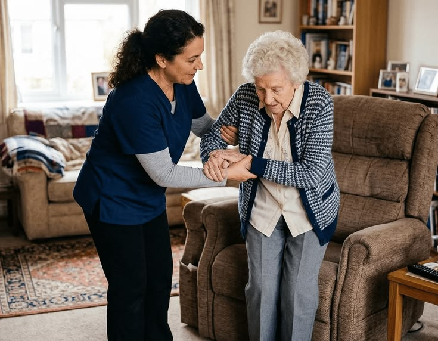

Missão
Oferecer cuidado domiciliar humanizado e personalizado, proporcionando segurança, conforto, respeito e qualidade de vida aos nossos pacientes e tranquilidade às suas famílias.
Atendimento domiciliar em São Paulo e região
A Elite Sênior Home Care oferece atendimento domiciliar humanizado e personalizado, proporcionando mais segurança, conforto e qualidade de vida para idosos e suas famílias.
Contamos com profissionais qualificados para oferecer suporte de acordo com as necessidades de cada pessoa, respeitando sua rotina, individualidade e bem-estar.
A Elite Sênior Home Care nasceu com o propósito de oferecer um cuidado domiciliar humanizado, seguro e de confiança.
Entendemos que cada pessoa possui uma história, uma rotina e necessidades diferentes. Por isso, buscamos oferecer um atendimento personalizado, respeitando a individualidade de cada paciente e proporcionando mais tranquilidade para toda a família.
Nosso trabalho vai além do acompanhamento diário. Buscamos construir uma relação baseada em confiança, respeito, responsabilidade e carinho, oferecendo suporte às famílias que precisam de auxílio no cuidado de quem amam.
Oferecer cuidado domiciliar humanizado e personalizado, proporcionando segurança, conforto, respeito e qualidade de vida aos nossos pacientes e tranquilidade às suas famílias.
Ser reconhecida pela excelência e confiança na prestação de serviços de cuidado domiciliar, tornando-se referência em atendimento humanizado à pessoa idosa.
Humanização · Respeito · Segurança · Ética · Confiança · Responsabilidade · Excelência
Formada em Administração, Jane Carolina iniciou sua trajetória profissional como cuidadora. Sua experiência prática, aliada à gestão, contribui para compreender de perto as necessidades dos pacientes, familiares e profissionais envolvidos no cuidado.
Enfermeiro, com ampla experiência na área, atua como Responsável Técnico da Elite Sênior Home Care, contribuindo para a qualidade, segurança e acompanhamento dos serviços prestados. COREN-SP 001635675.
Cada pessoa possui necessidades diferentes. Por isso, a Elite Sênior oferece serviços que podem ser personalizados de acordo com a rotina e o nível de assistência necessário.
Assistência e acompanhamento no conforto do lar, proporcionando segurança, companhia e apoio nas atividades da rotina diária.
Atendimento realizado por profissionais de enfermagem de acordo com as necessidades do paciente e as orientações relacionadas ao seu cuidado.
Indicado para famílias que precisam de alguém de confiança para acompanhar o idoso durante parte do dia, consultas, exames, internações, compromissos ou outras atividades da rotina.
Suporte durante o período de recuperação após procedimentos cirúrgicos, proporcionando mais segurança e tranquilidade ao paciente e à família. O atendimento é personalizado conforme as necessidades identificadas durante a avaliação.
Entre em contato com nossa equipe. Realizamos uma avaliação gratuita e sem compromisso para entender as necessidades do paciente e apresentar as possibilidades de atendimento.
Solicitar avaliação gratuitaCuidar de quem você ama pode gerar muitas dúvidas. Por isso, buscamos tornar o processo simples e acolhedor desde o primeiro contato.
Conte um pouco sobre a necessidade do paciente e a rotina da família.
Nossa equipe busca compreender as necessidades do paciente, o nível de assistência necessário e as particularidades da rotina.
A partir da avaliação, apresentamos as possibilidades de atendimento e elaboramos um orçamento de acordo com a necessidade da família.
Após a contratação, organizamos o atendimento e acompanhamos a adaptação do paciente, da família e dos profissionais envolvidos.
Sabemos que cada família possui uma rotina e uma necessidade diferente. Por isso, trabalhamos com planos e pacotes personalizados, definidos de acordo com o tipo de atendimento, período e necessidades do paciente.
Entre em contato conosco para realizar uma avaliação gratuita. A partir dela, nossa equipe poderá apresentar as opções de atendimento e elaborar um orçamento personalizado.
Companhia e apoio nas atividades da rotina, proporcionando segurança, atenção e auxílio nas necessidades do dia a dia.
Quero saber maisAtendimento para situações que necessitam de acompanhamento mais próximo, podendo incluir suporte de profissionais de enfermagem conforme as necessidades do paciente.
Quero saber maisIndicado para pacientes com maior nível de dependência ou que necessitam de cuidados mais intensivos, incluindo situações de recuperação pós-cirúrgica e outras necessidades identificadas durante a avaliação.
Quero saber maisNossa equipe realiza uma avaliação gratuita para compreender as necessidades do paciente e da família e apresentar as possibilidades de atendimento.
Solicitar avaliação gratuitaAvaliação gratuita e sem compromisso. Emitimos nota fiscal e recibo.
Em breve, você poderá conferir aqui os relatos de famílias atendidas pela Elite Sênior Home Care.
Nesta seção compartilhamos conteúdos informativos sobre cuidados com idosos, segurança, bem-estar e qualidade de vida. Nosso objetivo é ajudar familiares e cuidadores a compreender melhor situações comuns da rotina de cuidado.

O banheiro e outras áreas da casa merecem atenção especial na prevenção de quedas. Conheça alguns cuidados que podem tornar o ambiente mais seguro para o idoso.
Quedas estão entre os principais motivos de internação e perda de autonomia em idosos, mas boa parte delas pode ser evitada com ajustes simples no ambiente da casa.
Algumas mudanças que costumam fazer diferença:
Cada casa tem particularidades, por isso uma avaliação presencial do ambiente costuma trazer recomendações mais específicas para a rotina de cada família.
Algumas atitudes podem tornar esses momentos mais tranquilos para o idoso e também para quem cuida.
Para quem convive com alguém com Alzheimer ou outras formas de demência, ouvir a mesma pergunta várias vezes no mesmo dia é uma situação comum — e desgastante quando não se sabe como lidar com ela.
Alguns caminhos que costumam ajudar:
Corrigir ou insistir que a informação já foi dada tende a gerar frustração para os dois lados. O objetivo não é convencer, mas acolher o momento com tranquilidade.
Entenda alguns fatores que podem estar relacionados à perda de apetite e saiba quando é importante buscar orientação profissional.
A perda de apetite no idoso pode ter causas bem diferentes entre si, e entender a origem ajuda a saber que tipo de apoio buscar.
Alguns pontos que vale observar:
Em casa, pode ajudar oferecer refeições menores e mais frequentes, priorizar os alimentos preferidos da pessoa e manter os horários de refeição como um momento tranquilo, sem pressão. Quando a perda de apetite persiste por vários dias ou vem acompanhada de perda de peso, vale conversar com o médico responsável para investigar a causa.
Atendimento domiciliar em São Paulo e região.
A Elite Sênior Home Care oferece atendimento domiciliar em diferentes localidades de São Paulo e região.
Na cidade de São Paulo, consulte nossa equipe para verificar a disponibilidade de atendimento em seu bairro.
Atendemos em São Paulo, incluindo Bela Vista, Itaim Bibi, Higienópolis e Tatuapé, além de Guarulhos, Arujá, Itaquaquecetuba e região. Para consultar a disponibilidade de atendimento em sua localização, entre em contato com nossa equipe.
Não. Atualmente, a Elite Sênior Home Care não trabalha com planos de saúde. Para conhecer nossos planos, pacotes e formas de contratação, entre em contato com nossa equipe.
Trabalhamos com contratos personalizados, de acordo com o plano ou pacote contratado. As condições são apresentadas de forma clara antes da contratação.
Buscamos proporcionar continuidade e segurança no atendimento. A definição dos profissionais e da escala é realizada de acordo com as necessidades do paciente e a disponibilidade da equipe.
A família poderá entrar em contato com nossa equipe para conversar sobre o atendimento. Cada situação será avaliada individualmente para buscarmos a melhor solução para o paciente e sua família.
Temos opções de atendimento em diferentes períodos e escalas. Consulte nossa equipe para verificar a disponibilidade de acordo com o período e o tipo de atendimento necessário.
Primeiro buscamos entender as necessidades do paciente e da família. A partir dessa avaliação, apresentamos as opções de atendimento, plano ou pacote mais adequado para aquela situação.
Buscamos profissionais qualificados, responsáveis e comprometidos com um atendimento humanizado. A seleção considera experiência profissional, documentação, perfil e compatibilidade com as necessidades do atendimento.
Possuímos diferentes possibilidades de atendimento, de acordo com a necessidade do paciente e da família. Entre em contato conosco para verificarmos a disponibilidade e a modalidade mais adequada para sua situação.
Trabalhamos com diferentes períodos e escalas de atendimento. A disponibilidade é avaliada de acordo com a necessidade do paciente, a localização e o tipo de assistência necessária.
Recomendamos entrar em contato assim que identificar a necessidade de assistência. O prazo para início do atendimento dependerá da avaliação, localização, período solicitado e disponibilidade de profissionais.
Precisa de ajuda para cuidar de alguém especial? Converse com nossa equipe. Estamos à disposição para entender sua necessidade, esclarecer suas dúvidas e apresentar as opções de atendimento.
São Paulo e região
Estamos sempre em busca de profissionais qualificados, responsáveis e comprometidos para fazer parte da nossa equipe de profissionais.
Envie seu currículo e seus dados profissionais para nossa equipe de seleção.
Enviar currículo por e-mail Falar com o RH no WhatsApp